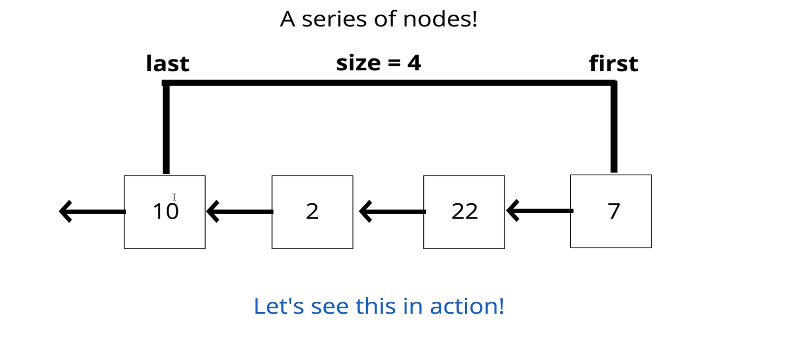

Stacks
A LIFO (Last In First Out) structure!
The last element added to the stack will be the first element removed from the stack
How is it used?
Think about a stack of plates, or a stack of markers, or a stack of ... anything
As you pile it up the last thing (or the topmost thing) is what gets removed first.
Where Stacks are used
- Managing function invocations
- Undo / Redo
- Routing (the history object) is treated like a stack